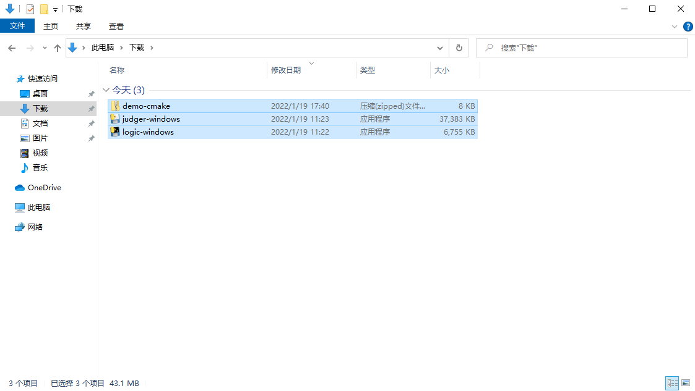
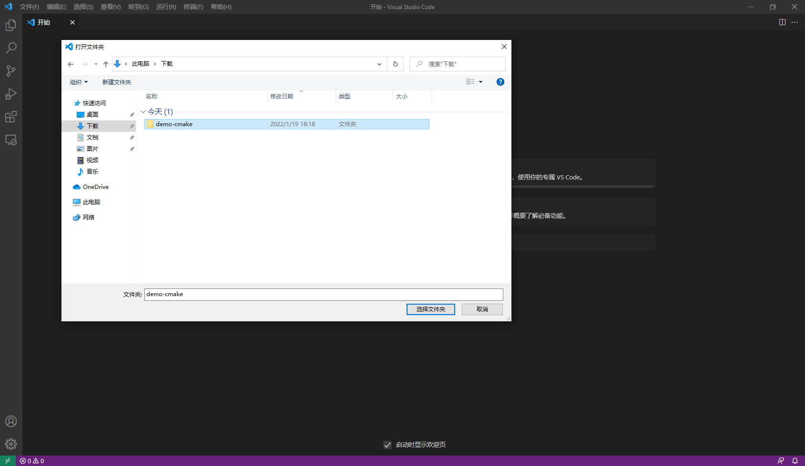
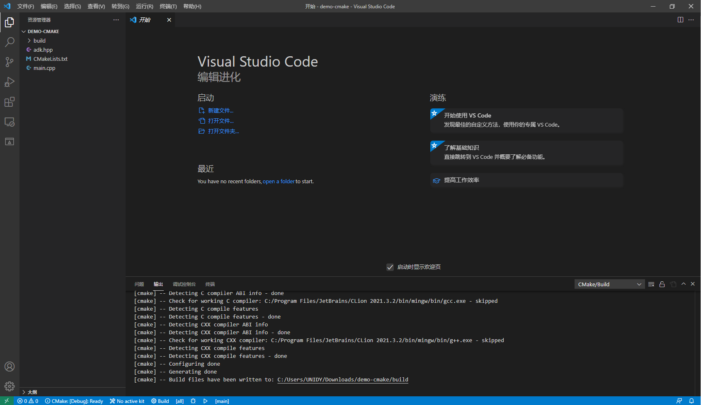
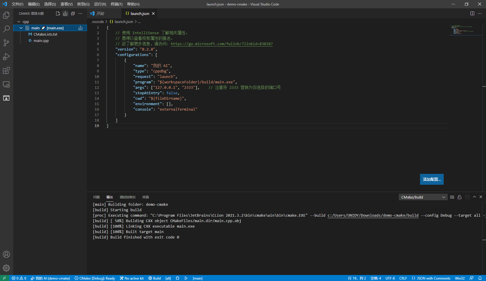
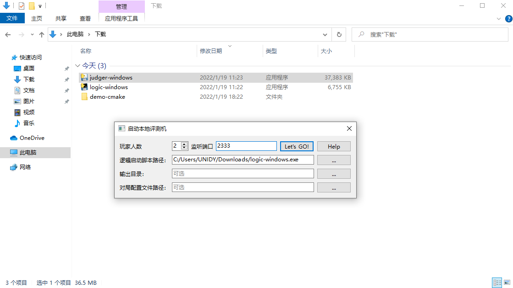
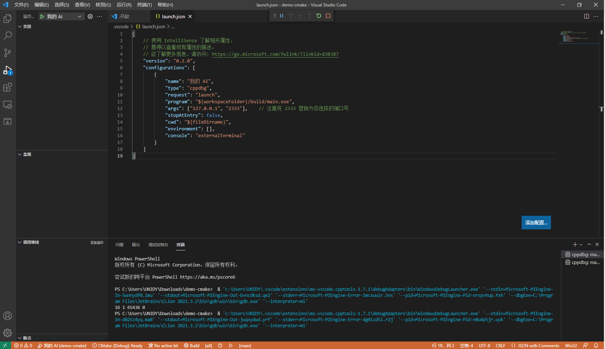
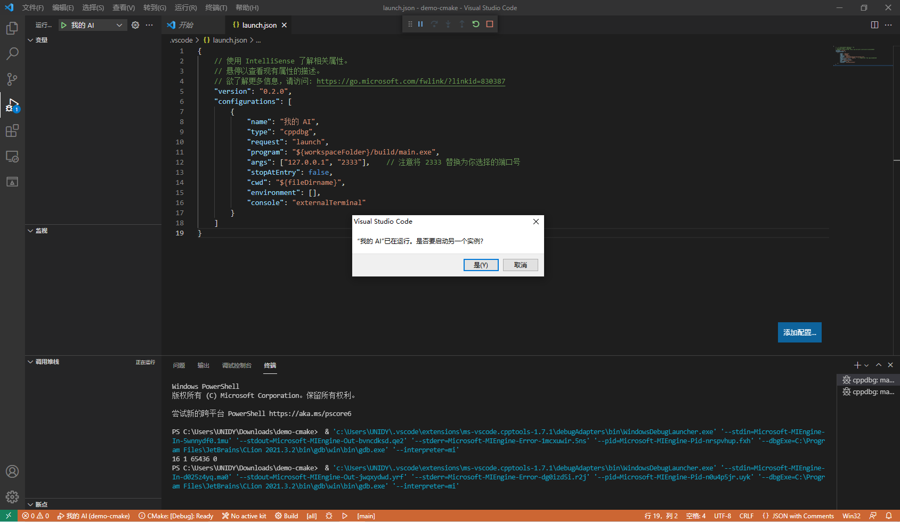

基于 VS Code 的 C++ 环境配置
阅读该文档之前，我们认为你已经配备好基本的 C++ 环境，本教程将不再赘述。本教程将针对智能体 AI 的本地运行进行展开。
准备工作
打开游戏包，下载游戏逻辑、本地评测工具和 CMake 版样例 AI。
以贪吃蛇围棋为例，你需要根据自己的操作系统，下载
logic-dist/logic、local-judger/judger和ai/demo-cmake。

解压下载下来的 demo-cmake.zip ，并使用 vscode 打开项目，等待 vscode 加载完成。

正常情况下，打开项目后，输出标签页将会给出 CMake 项目初始化的输出，如下所示。

配置项目
首先，在 0~65535 选择一个端口号。本教程选择了 2333 作为端口号。
端口号可能有冲突，因此请尽量避免使用 80、3000 等常见端口号。
打开 vscode，创建 launch.json 。一个示例如下。
{
// 使用 IntelliSense 了解相关属性。
// 悬停以查看现有属性的描述。
// 欲了解更多信息，请访问: https://go.microsoft.com/fwlink/?linkid=830387
"version": "0.2.0",
"configurations": [
{
"name": "我的 AI",
"type": "cppdbg",
"request": "launch",
"program": "${workspaceFolder}/build/main.exe",
"args": ["127.0.0.1", "2333"], // 注意将 2333 替换为你选择的端口号
"stopAtEntry": false,
"cwd": "${fileDirname}",
"environment": [],
"console": "externalTerminal"
}
]
}
找到 CMake 标签页，生成所有项目。
注意：每次修改代码之后，开始评测之前，都应重新生成，相当于编译。

进行评测
打开刚刚下载的本地评测工具（local-judger），按 本地调试工具使用说明 文档 启动调试工具 一节所述操作，端口号填你所设定的端口号，逻辑启动脚本路径选择刚刚下载下来的游戏逻辑可执行文件，点击 Let's GO! 。

回到 vscode，进入 运行 标签页，点击运行按钮，即可启动一个 AI 并连入本地评测机。

再次点击运行按钮，创建另一个运行实例，即可启动另一个 AI 。

回到本地评测工具，你会发现两个 AI 都已成功连入，且开始评测。
稍等片刻，你就能得到本地评测的结果了！